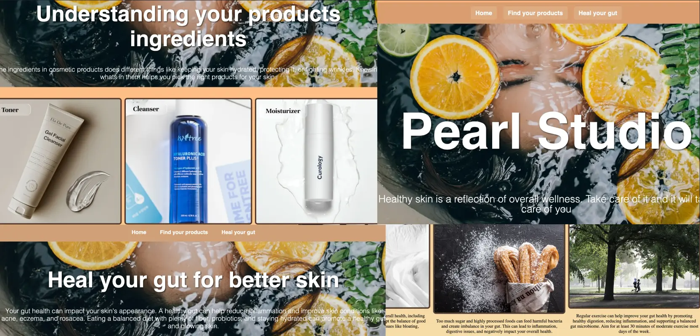

Figma & Adobe
UX/UX Design

Om Projektet
I dette tema dykkede vi ned i brugercentreret design og lærte at skabe intuitive brugergrænseflader. Jeg arbejdede med user research, wireframing og high-fidelity prototyping i Figma. Fokus var på at forstå brugernes behov og designe løsninger der er både funktionelle og æstetiske.
Læringsmål:
- Forståelse af UX/UI-designprincipper
- Anvendelse af Figma i design
- Oprettelse af wireframes og prototyper
- Brug af brugerfeedback til forbedring af design
Min emnesite
Vi skulle udvikle vores eget website om et emne, vi selv kunne vælge. Det var essentielt at vælge et emne, som vi havde både viden om og interesse for, samt et netværk af potentielle brugere, der kunne fungere som testpersoner. Opgaven inkluderede:
- Udførelse af research og idéudvikling
- Skabelse af en digital, klikbar prototype i Figma
- Kodning af hjemmesiden
- Udarbejdelse af dokumentation
Jeg skulle overveje de tekster og billeder, der skulle inkluderes på mit site. Her skulle vi producere et første udkast til løsningen og teste vores idé.
Processen
Uge 1: User interface Design & User Experience Design
Formålet med temaet var at give os en forståelse for udvalgte UX/UI-metoder og lære os, hvordan vi præsenterer vores design- og udviklingsproces for et produkt eller en løsning.
Til min emneside benyttede jeg desk research, hvor jeg indsamlede en masse information online. Alternativt kunne jeg have gennemført interviews med medarbejdere, der er involveret i det projekt, jeg har arbejdet på. Efter at have afsluttet min research, gik jeg videre til at lave et moodboard og en styletile for at finde mit tema. Herefter begyndte jeg at udvikle en low fidelity prototype, som jeg derefter gjorde til high fidelity for at tage udgangspunkt i min low fidelity.
Uge 2: Brugertest
Når prototypen (klikbar) var færdig, skulle vi gennemføre forskellige brugertests. Vi udførte fem-sekunders test, tænke-højt test og Likert-test for at vurdere, om brugerne kan forstå formålet med vores website, samt om designet effektivt kommunikerer det primære budskab. Vi gennemfører disse tests for at få feedback, der kan forbedre vores website, så brugerne tydeligt kan se dets formål.